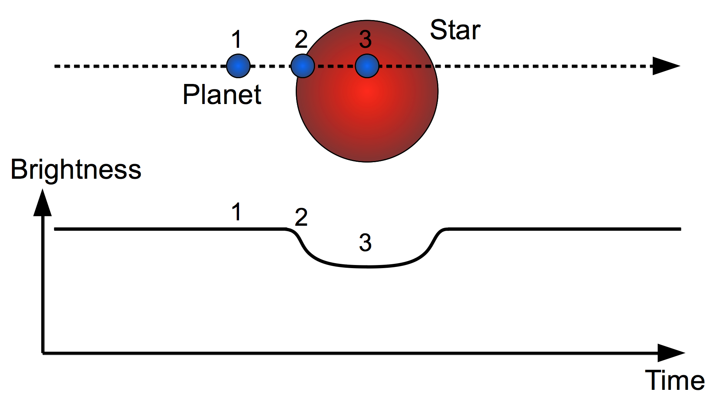
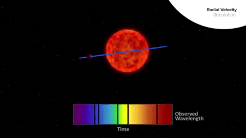

Okay, okay, okay. I don't actually mean invisible—that would be pretty strange, though. Planets are gargantuan objects, but they almost always orbit stars that are vastly brighter and larger than the planets they orbit. This renders planets invisible to astronomers using telescopes. Just think about it for a second: stars are some of the brightest objects in the cosmos, while planets—though large—are orders of magnitude smaller and far less luminous than their host star. And since they're so close to their star (in space terms), they're basically a firefly in front of a lighthouse beacon. But there are some clever techniques scientists use to detect these worlds.
Stars emit light at a constant brightness (luminosity)—meaning if you graphed it over time, you'd get a straight horizontal line. However, if a planet orbits the star and passes in front of it from our point of view, the star's brightness will dip. When astronomers notice these dips, they keep gathering data, because if the dips recur at regular intervals, it means an exoplanet (a planet outside our solar system) is orbiting the star.
That isn't the only information you can get from this. We can determine an exoplanet's orbital period by measuring the time between two dips in its host star's brightness. The exoplanet is in front of the star at the first dip, then orbits until it crosses again, creating the next dip. We can also determine an exoplanet's size by how deep the brightness dip is — the larger the dip, the larger the planet.
The radial velocity (wobble) method takes a different approach. While exoplanets might be tiny compared to their host star, they still tug on it with gravity. As the exoplanet orbits, we can observe the star wobble. This wobble shows up in a spectrograph (an instrument that displays the wavelengths of light an object emits) because, as the star moves, its spectral lines shift back and forth. Below is a GIF that shows the process.
This method reveals something the transit method can't: an exoplanet's minimum mass. MINIMUM MASS! Yeah, that's a little confusing. With the wobble method, we don't know the orbit's orientation—all we see are shifts in the star's spectrum caused by the star moving toward and away from us. From the size of that wobble, we can calculate a minimum mass, because we only measure the motion along our line of sight. The true mass could be larger if the orbit is tilted; however, we won't know by how much if the orbit is tilted, say, 2 degrees versus 89 degrees.